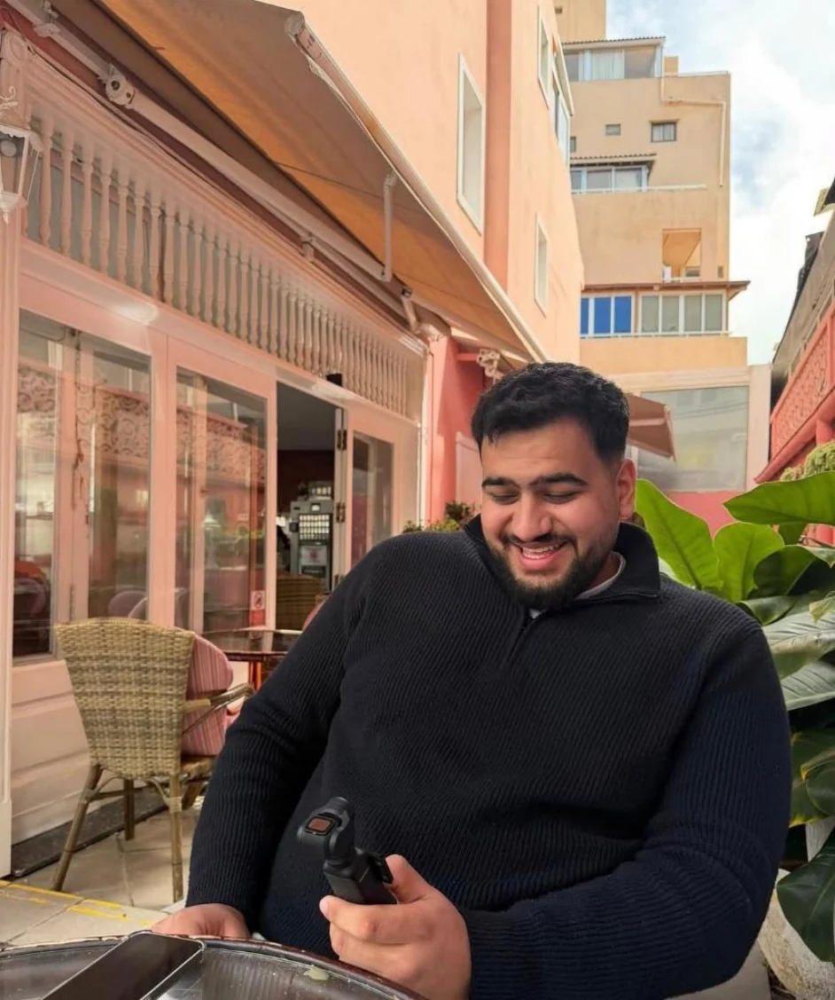

Lees & ontdek
Bekijk de profielen wanneer het voor jou goed voelt. Er is geen haast.
Vier verhalen. Een eerste stap. Op jouw tempo.|
Nieuwsgierig naar wie er achter de glimlach zit? Ontdek de profielen en kijk rustig of er een verhaal bij je past.

VefaDe ondernemerIedereen brengt iets anders mee. Neem de tijd om te lezen, te glimlachen en te voelen of je meer wilt weten.
Geen snelle swipes of privéchat. Alleen een weloverwogen kennismaking, met de mensen die jij erbij wilt betrekken.
Bekijk de profielen wanneer het voor jou goed voelt. Er is geen haast.
Vertel iets over jezelf en vermeld hoe we je wali of begeleider kunnen bereiken.
De beheerder beoordeelt elke aanvraag handmatig. Een vervolg verloopt respectvol en met begeleiding.
Jij bepaalt wie betrokken is. Gegevens van je wali of een neutrale begeleider zijn welkom. In deze demo worden formulieren niet opgeslagen of verstuurd.
Neem vooral iemand in vertrouwen mee in je keuze.